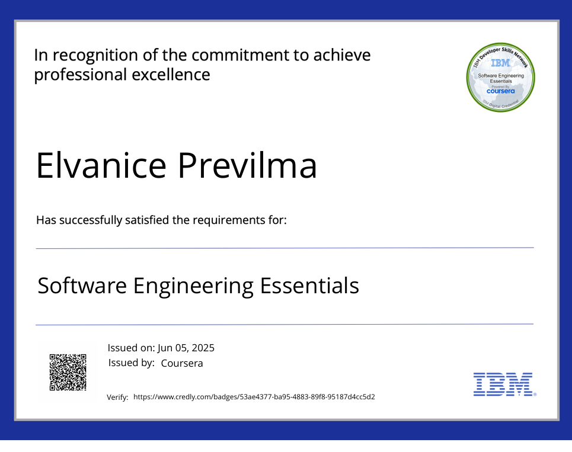

Elvie Tatian Previlma
AKA The Real Tech Baddie
Bio:
Media Handles Contact Info Git Hub
I'm Elvanice ( aka Elvie), an IT student specializing in software application
development with a strong foundation in Java,
object-oriented design, and systems
thinking.
I’m currently learning how to turn complex user needs into intuitive, scalable
code—and I'm all about building solutions with real-world impact.
Whether I’m
diagramming system flow with UML or coding class structures from scratch, I care about
writing maintainable code and aligning software
to business strategy.What I’ve worked on so far:
- Developed a recipe management app using Java and OOAD principles
- Built full software lifecycle models (use case, class, and sequence diagrams) for a paper grading platform
- Conducted a technical audit for HYPERVSN, evaluating IT solutions for immersive display tech
- Analyzed operating system architecture, performance, and security to deliver optimized recommendations
What I’m learning now:
- Agile development methods
- Test-driven development
- Real-world debugging and code reviews
My goal is to grow into a software engineer who can think like a designer, code like an architect, and deliver like a product owner.
Let’s connect if you’re into building things that make sense and make an impact.

Education
- A.A Palm Beach State University
- B.A. Journalism Palm Beach Atlantic University
- B.A Southern New Hampshire University: Communication, New Media Concentration
- M.S Southern New Hampshire University: Information Technology - Software Application Development
Work Experience
- Alphy, San Francisco California, Freelance Engagements and Events Consulting Coordinator
- Digital Resource, West Palm Beach, Multimedia Specialist Intern
- The Beacon, West Palm Beach, Social Media Manager
- The Beacon, West Palm Beach, Staff Reporter/Mentor
Skills
- 💻 Technical Skills (Web Dev Basics) ⭐⭐⭐⭐⭐
- HTML5
- Git & GitHub
- Visual Studio Code
- File & Folder Structure
- 🎨 Creative & Design Skills (Your Graphic Design background) ⭐ ⭐⭐⭐⭐
- Adobe Photoshop
- Adobe Illustrator
- Canva
- Branding & Logo Design
- 🛠 Soft Skills (Employers love these) ⭐ ⭐ ⭐⭐⭐
- Communication
- Problem-Solving
- Creativity
- Attention to Detail
- Time Management
Awards
